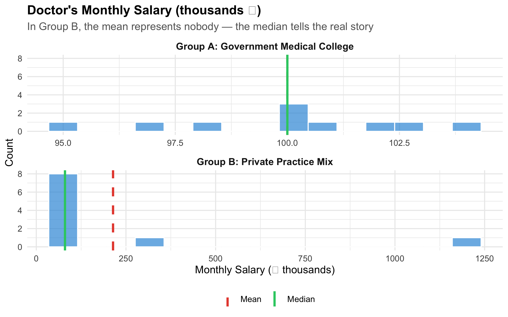
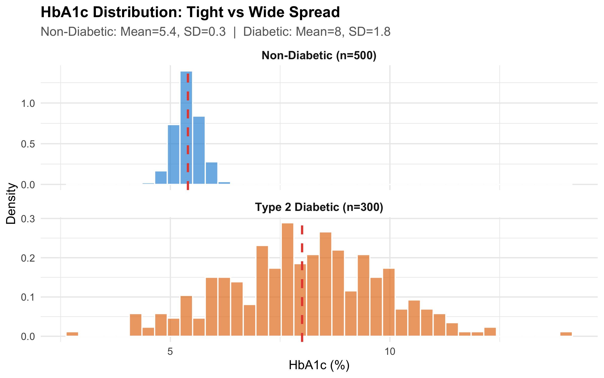
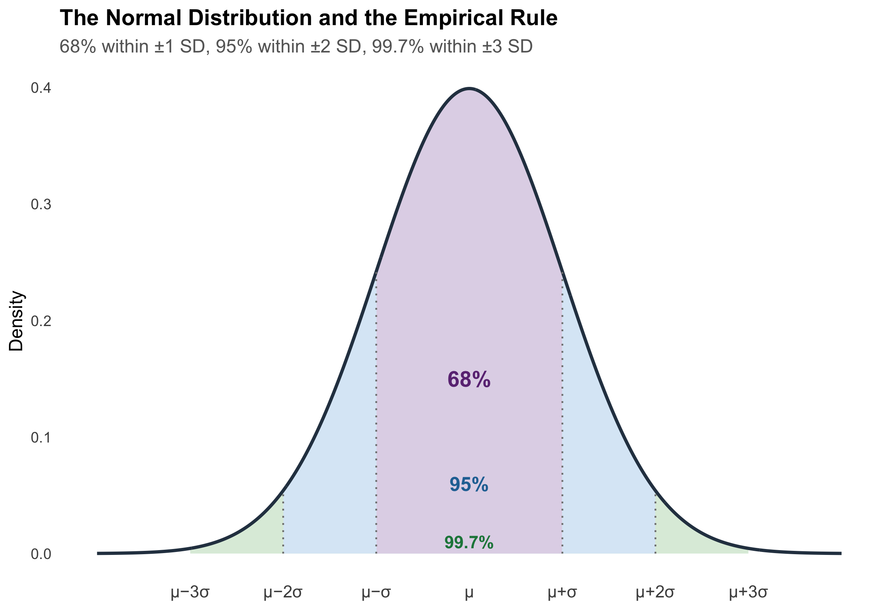
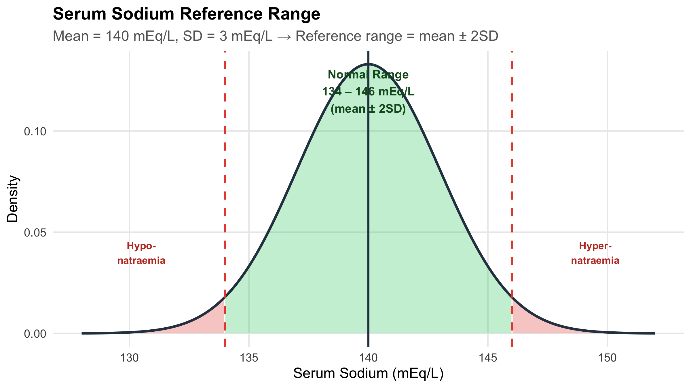
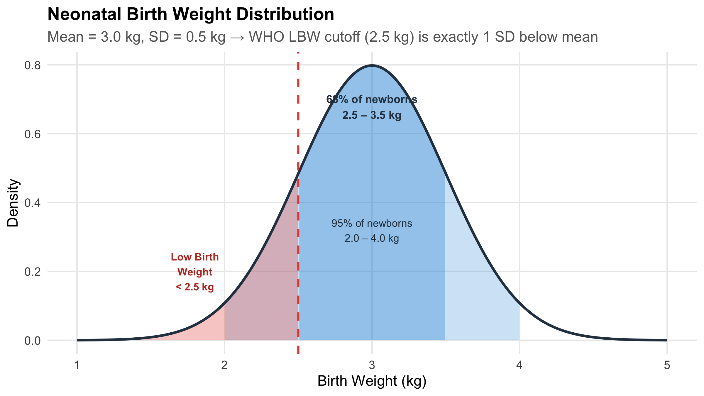
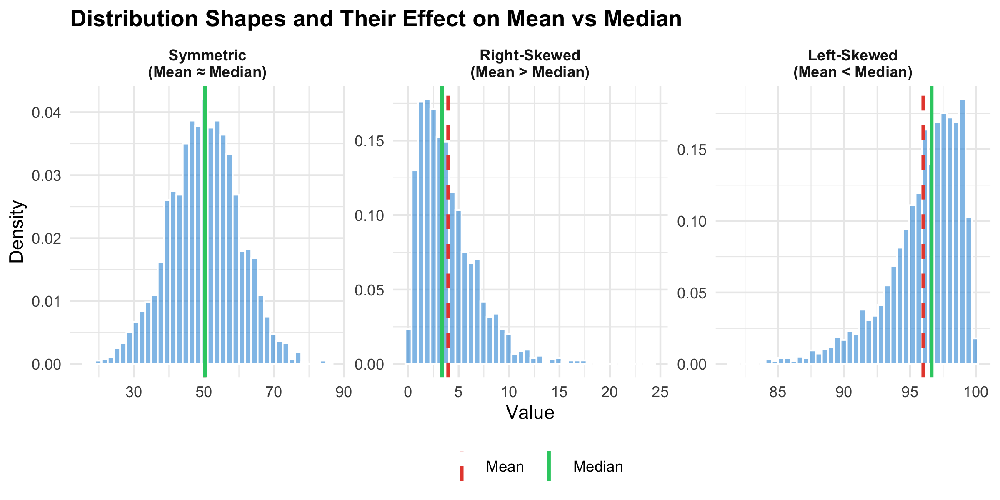
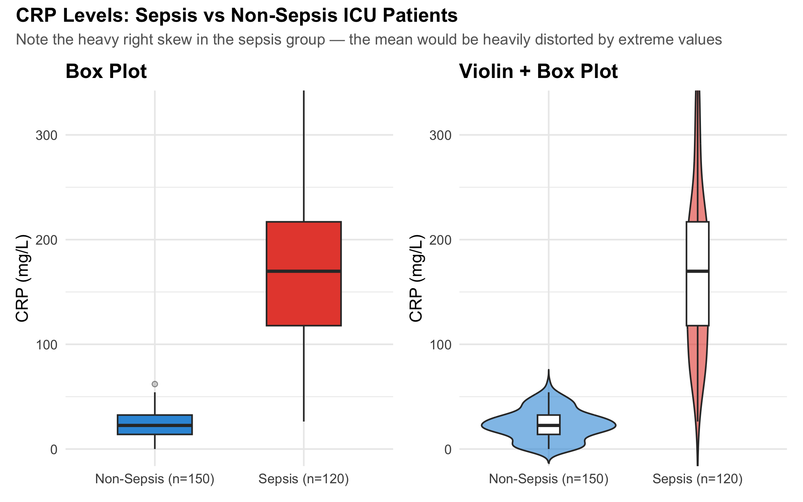
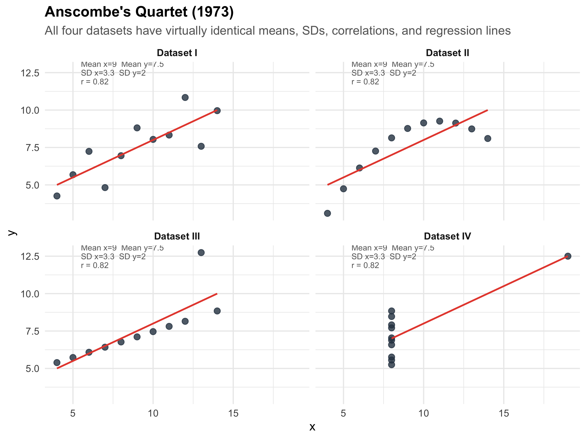

Calculate and interpret measures of central tendency (mean, median, mode)
Recognise when the mean is misleading and the median is more appropriate
Quantify variability using range, IQR, variance, standard deviation, and coefficient of variation
Describe the Normal distribution and apply the 68-95-99.7 rule to clinical reference ranges
Identify skewed distributions and choose appropriate summary statistics
Read and interpret box plots, violin plots, and histograms
Explain why summary statistics alone can be deceptive (Anscombe’s quartet)
3.2 Clinical Hook: The “Average” Doctor’s Salary
Same Average, Very Different Realities
Imagine two groups of 10 doctors each. Group A works in a government medical college — everyone earns roughly ₹1,00,000/month. Group B works across private settings — 8 junior consultants earn ₹80,000/month, one senior consultant earns ₹3,00,000, and one star surgeon earns ₹12,00,000.
The mean salary in both groups? About ₹1,00,000 and ₹2,10,000, respectively. But in Group B, the mean of ₹2,10,000 represents nobody — 8 out of 10 doctors earn well below it. The median (₹80,000) tells you what a “typical” doctor in Group B actually earns.
Now replace “salary” with serum creatinine in a renal OPD. Most patients have values around 1.0–1.5 mg/dL, but a few patients with CKD stage 5 have creatinine values of 8–12 mg/dL. The mean creatinine in your OPD might be 3.2 mg/dL — a number that describes almost no one. The median of 1.4 mg/dL tells the real story.
The lesson: a single number can mislead. Describing data well requires knowing which summary to use and why.
3.3 Measures of Central Tendency
Central tendency answers the question: “What is a typical value in this dataset?” There are three main measures, and choosing the wrong one is one of the most common errors in clinical research.
The mean uses every data point. This is its strength (maximum information) and its weakness (sensitive to outliers).
When to use: Symmetric distributions with no extreme outliers — e.g., systolic BP in a general population, haemoglobin in healthy adults.
When NOT to use: Skewed data or data with outliers — e.g., length of hospital stay, income, serum creatinine in mixed renal populations.
Median (Middle Value)
The value that splits the dataset in half — 50% of observations fall below, 50% above. For n observations sorted in order, the median is the value at position \((n+1)/2\).
When to use: Skewed distributions, ordinal data, or whenever outliers are present. The median is robust — a few extreme values don’t move it.
Mode
The most frequently occurring value. Primarily useful for nominal data (e.g., the most common blood group in a population) or for identifying peaks in a distribution (bimodal distributions).
Demonstrating the Difference
Code
# Government doctorsgovt<-tibble( salary =c(95, 98, 100, 100, 102, 100, 97, 103, 101, 104), group ="Group A: Government Medical College")# Private doctorsprivate<-tibble( salary =c(75, 78, 80, 80, 82, 80, 85, 80, 300, 1200), group ="Group B: Private Practice Mix")both<-bind_rows(govt, private)stats<-both%>%group_by(group)%>%summarise( Mean =mean(salary), Median =median(salary), .groups ="drop")ggplot(both, aes(x =salary))+geom_histogram(bins =15, fill ="#3498db", alpha =0.7, colour ="white")+geom_vline(data =stats, aes(xintercept =Mean, colour ="Mean"), linewidth =1.2, linetype ="dashed")+geom_vline(data =stats, aes(xintercept =Median, colour ="Median"), linewidth =1.2, linetype ="solid")+scale_colour_manual(values =c("Mean"="#e74c3c", "Median"="#2ecc71"), name ="")+facet_wrap(~group, scales ="free_x", ncol =1)+labs( title ="Doctor's Monthly Salary (thousands \u20b9)", subtitle ="In Group B, the mean represents nobody — the median tells the real story", x ="Monthly Salary (\u20b9 thousands)", y ="Count")+theme_minimal(base_size =12)+theme( plot.title =element_text(face ="bold"), plot.subtitle =element_text(colour ="grey40"), legend.position ="bottom", strip.text =element_text(face ="bold", size =11))

Figure 3.1: Same summary statistic, very different distributions — why the mean can mislead
The Golden Rule of Central Tendency
Symmetric data → report mean
Skewed data or outliers → report median
Categorical data → report mode
Always report both central tendency AND a measure of spread. A mean without a standard deviation (or a median without an IQR) is incomplete.
3.4 Measures of Dispersion (Spread)
Central tendency tells you the “centre” — but two datasets can have the same centre with very different spreads. A drug that reduces BP by 10 mmHg on average might help some patients by 30 and harm others by 10. The spread tells you how much individual responses vary.
Range
Simply: maximum − minimum. Easy to compute but extremely sensitive to outliers — a single extreme value inflates it dramatically.
Interquartile Range (IQR)
\[\text{IQR} = Q_3 - Q_1\]
where \(Q_1\) = 25th percentile and \(Q_3\) = 75th percentile. The IQR captures the middle 50% of the data, ignoring the tails. It is robust to outliers.
We divide by \(n-1\) (not \(n\)) for a sample, because we lose one degree of freedom by estimating \(\bar{x}\) from the same data. This is called Bessel’s correction — it gives an unbiased estimate of the population variance.
SD is in the same units as the original data (unlike variance, which is in squared units). This makes SD the most commonly reported measure of spread in clinical research.
Coefficient of Variation (CV)
\[\text{CV} = \frac{s}{\bar{x}} \times 100\%\]
The CV expresses SD as a percentage of the mean. Use it to compare variability across different scales — e.g., is weight more variable than height in a population?
Worked Example: HbA1c in Diabetic vs Non-Diabetic Patients
Code
# Simulate realistic HbA1c datanon_diabetic<-tibble( hba1c =rnorm(500, mean =5.4, sd =0.3), group ="Non-Diabetic (n=500)")diabetic<-tibble( hba1c =rnorm(300, mean =8.2, sd =1.8), group ="Type 2 Diabetic (n=300)")hba1c_data<-bind_rows(non_diabetic, diabetic)hba1c_stats<-hba1c_data%>%group_by(group)%>%summarise( Mean =round(mean(hba1c), 1), SD =round(sd(hba1c), 1), Median =round(median(hba1c), 1), IQR_val =round(IQR(hba1c), 1), .groups ="drop")ggplot(hba1c_data, aes(x =hba1c, fill =group))+geom_histogram(aes(y =after_stat(density)), bins =40, alpha =0.7, colour ="white", position ="identity")+geom_vline(data =hba1c_stats, aes(xintercept =Mean), colour ="#e74c3c", linewidth =1, linetype ="dashed")+facet_wrap(~group, ncol =1, scales ="free_y")+scale_fill_manual(values =c("#3498db", "#e67e22"), guide ="none")+labs( title ="HbA1c Distribution: Tight vs Wide Spread", subtitle =paste0("Non-Diabetic: Mean=", hba1c_stats$Mean[1], ", SD=", hba1c_stats$SD[1]," | Diabetic: Mean=", hba1c_stats$Mean[2], ", SD=", hba1c_stats$SD[2]), x ="HbA1c (%)", y ="Density")+theme_minimal(base_size =12)+theme( plot.title =element_text(face ="bold"), plot.subtitle =element_text(colour ="grey40"), strip.text =element_text(face ="bold", size =11))

Figure 3.2: Same central tendency concept, very different spread — HbA1c in diabetic vs non-diabetic patients
Table 3.1: Summary statistics for HbA1c by group
Group
n
Mean
SD
Median
IQR
Min
Max
Non-Diabetic (n=500)
500
5.39
0.29
5.39
0.39
4.50
6.29
Type 2 Diabetic (n=300)
300
8.05
1.76
8.09
2.31
2.77
14.01
Reporting mean ± SD for skewed data
Many published papers report “Mean HbA1c in diabetic patients was 8.2 ± 1.8%.” But if the distribution is right-skewed (which diabetes data often is), the mean ± SD can imply negative values in the lower range — which is biologically impossible. For skewed data, report median (IQR) instead.
3.5 The Normal (Gaussian) Distribution
The Normal distribution is the most important distribution in statistics. Many biological measurements — height, blood pressure, serum sodium — approximate a Normal distribution in large populations.
Properties
A Normal distribution is fully described by just two parameters: the mean (\(\mu\)) and standard deviation (\(\sigma\)). It is symmetric, bell-shaped, and follows a precise mathematical rule:
The 68-95-99.7 Rule (Empirical Rule)
Code
x<-seq(-4, 4, length.out =1000)y<-dnorm(x)df_norm<-tibble(x =x, y =y)ggplot(df_norm, aes(x =x, y =y))+# 99.7% bandgeom_area(data =df_norm%>%filter(x>=-3&x<=3), fill ="#d5e8d4", alpha =0.8)+# 95% bandgeom_area(data =df_norm%>%filter(x>=-2&x<=2), fill ="#dae8fc", alpha =0.8)+# 68% bandgeom_area(data =df_norm%>%filter(x>=-1&x<=1), fill ="#e1d5e7", alpha =0.9)+# Outlinegeom_line(linewidth =1, colour ="#2c3e50")+# Annotationsannotate("text", x =0, y =0.15, label ="68%", fontface ="bold", size =5, colour ="#6c3483")+annotate("text", x =0, y =0.06, label ="95%", fontface ="bold", size =4.5, colour ="#2471a3")+annotate("text", x =0, y =0.01, label ="99.7%", fontface ="bold", size =4, colour ="#1e8449")+# SD markersannotate("segment", x =-1, xend =-1, y =0, yend =dnorm(-1), linetype ="dotted", colour ="grey50")+annotate("segment", x =1, xend =1, y =0, yend =dnorm(1), linetype ="dotted", colour ="grey50")+annotate("segment", x =-2, xend =-2, y =0, yend =dnorm(-2), linetype ="dotted", colour ="grey50")+annotate("segment", x =2, xend =2, y =0, yend =dnorm(2), linetype ="dotted", colour ="grey50")+scale_x_continuous( breaks =-3:3, labels =c("\u03bc\u22123\u03c3", "\u03bc\u22122\u03c3", "\u03bc\u2212\u03c3","\u03bc","\u03bc+\u03c3", "\u03bc+2\u03c3", "\u03bc+3\u03c3"))+labs( title ="The Normal Distribution and the Empirical Rule", subtitle ="68% within \u00b11 SD, 95% within \u00b12 SD, 99.7% within \u00b13 SD", x =NULL, y ="Density")+theme_minimal(base_size =12)+theme( plot.title =element_text(face ="bold"), plot.subtitle =element_text(colour ="grey40"), panel.grid =element_blank(), axis.text.x =element_text(size =11))

Figure 3.3: The 68-95-99.7 rule — the foundation of clinical reference ranges
Clinical Application: How Reference Ranges Are Built
This is literally how your lab’s “normal range” works.
Serum sodium: mean = 140 mEq/L, SD = 3 mEq/L. The reference range of 134–146 mEq/L is approximately mean ± 2 SD, which captures 95% of healthy individuals. A value outside this range is “abnormal” — but 5% of healthy people will fall outside it by chance alone.
Code
na_mean<-140na_sd<-3x_na<-seq(128, 152, length.out =500)y_na<-dnorm(x_na, mean =na_mean, sd =na_sd)df_na<-tibble(x =x_na, y =y_na)ggplot(df_na, aes(x =x, y =y))+# Reference range shadinggeom_area(data =df_na%>%filter(x>=134&x<=146), fill ="#2ecc71", alpha =0.3)+# Abnormal lowgeom_area(data =df_na%>%filter(x<134), fill ="#e74c3c", alpha =0.3)+# Abnormal highgeom_area(data =df_na%>%filter(x>146), fill ="#e74c3c", alpha =0.3)+geom_line(linewidth =1, colour ="#2c3e50")+geom_vline(xintercept =c(134, 146), linetype ="dashed", colour ="#e74c3c", linewidth =0.8)+geom_vline(xintercept =140, linetype ="solid", colour ="#2c3e50", linewidth =0.8)+annotate("text", x =140, y =max(y_na)*0.9, label ="Normal Range\n134 \u2013 146 mEq/L\n(mean \u00b1 2SD)", fontface ="bold", size =3.5, colour ="#155724")+annotate("text", x =130.5, y =max(y_na)*0.3, label ="Hypo-\nnatraemia", colour ="#c0392b", fontface ="bold", size =3)+annotate("text", x =149.5, y =max(y_na)*0.3, label ="Hyper-\nnatraemia", colour ="#c0392b", fontface ="bold", size =3)+labs( title ="Serum Sodium Reference Range", subtitle ="Mean = 140 mEq/L, SD = 3 mEq/L \u2192 Reference range = mean \u00b1 2SD", x ="Serum Sodium (mEq/L)", y ="Density")+theme_minimal(base_size =12)+theme( plot.title =element_text(face ="bold"), plot.subtitle =element_text(colour ="grey40"), panel.grid.minor =element_blank())

Figure 3.4: Serum sodium: the Normal distribution in clinical practice
Another Example: Neonatal Birth Weight
Code
bw_mean<-3.0bw_sd<-0.5x_bw<-seq(1.0, 5.0, length.out =500)y_bw<-dnorm(x_bw, mean =bw_mean, sd =bw_sd)df_bw<-tibble(x =x_bw, y =y_bw)ggplot(df_bw, aes(x =x, y =y))+geom_area(data =df_bw%>%filter(x>=2.0&x<=4.0), fill ="#3498db", alpha =0.25)+geom_area(data =df_bw%>%filter(x>=2.5&x<=3.5), fill ="#3498db", alpha =0.35)+geom_area(data =df_bw%>%filter(x<2.5), fill ="#e74c3c", alpha =0.3)+geom_line(linewidth =1, colour ="#2c3e50")+geom_vline(xintercept =2.5, linetype ="dashed", colour ="#e74c3c", linewidth =0.8)+annotate("text", x =3.0, y =max(y_bw)*0.85, label ="68% of newborns\n2.5 \u2013 3.5 kg", fontface ="bold", size =3.2, colour ="#2c3e50")+annotate("text", x =3.0, y =max(y_bw)*0.4, label ="95% of newborns\n2.0 \u2013 4.0 kg", size =3, colour ="#2c3e50")+annotate("text", x =1.8, y =max(y_bw)*0.25, label ="Low Birth\nWeight\n< 2.5 kg", colour ="#c0392b", fontface ="bold", size =3)+labs( title ="Neonatal Birth Weight Distribution", subtitle ="Mean = 3.0 kg, SD = 0.5 kg \u2192 WHO LBW cutoff (2.5 kg) is exactly 1 SD below mean", x ="Birth Weight (kg)", y ="Density")+theme_minimal(base_size =12)+theme( plot.title =element_text(face ="bold"), plot.subtitle =element_text(colour ="grey40"), panel.grid.minor =element_blank())

Figure 3.5: Birth weight distribution — the 68-95-99.7 rule applied to neonatal care
Why does the WHO define low birth weight as < 2.5 kg?
If birth weight is approximately Normal with mean 3.0 kg and SD 0.5 kg, then 2.5 kg is exactly 1 SD below the mean. About 16% of newborns fall below this threshold. This is not an arbitrary cutoff — it is directly derived from the statistical properties of the distribution.
3.6 Skewness: When the Distribution Is Not Symmetric
Many clinical variables are not Normally distributed. Length of hospital stay, serum creatinine in mixed populations, CRP levels — these are typically right-skewed (a long tail to the right).
Code
symmetric<-tibble(value =rnorm(2000, 50, 10), shape ="Symmetric\n(Mean \u2248 Median)")right_skew<-tibble(value =rgamma(2000, shape =2, rate =0.5), shape ="Right-Skewed\n(Mean > Median)")left_skew<-tibble(value =100-rgamma(2000, shape =2, rate =0.5), shape ="Left-Skewed\n(Mean < Median)")all_shapes<-bind_rows(symmetric, right_skew, left_skew)%>%mutate(shape =factor(shape, levels =c("Symmetric\n(Mean \u2248 Median)","Right-Skewed\n(Mean > Median)","Left-Skewed\n(Mean < Median)")))shape_stats<-all_shapes%>%group_by(shape)%>%summarise(Mean =mean(value), Median =median(value), .groups ="drop")ggplot(all_shapes, aes(x =value))+geom_histogram(aes(y =after_stat(density)), bins =40, fill ="#3498db", alpha =0.6, colour ="white")+geom_vline(data =shape_stats, aes(xintercept =Mean, colour ="Mean"), linewidth =1, linetype ="dashed")+geom_vline(data =shape_stats, aes(xintercept =Median, colour ="Median"), linewidth =1)+scale_colour_manual(values =c("Mean"="#e74c3c", "Median"="#2ecc71"), name ="")+facet_wrap(~shape, scales ="free", ncol =3)+labs(title ="Distribution Shapes and Their Effect on Mean vs Median", x ="Value", y ="Density")+theme_minimal(base_size =11)+theme( plot.title =element_text(face ="bold"), legend.position ="bottom", strip.text =element_text(face ="bold"))

Figure 3.6: Three distribution shapes — symmetric, right-skewed, and left-skewed
“Mean > Median means right-skewed” — this is a useful rule of thumb, not an absolute law. Always look at the histogram before deciding. Some distributions can have mean > median without being visibly skewed.
3.7 Visualising Distributions: Box Plots and Violin Plots
CRP Levels in Sepsis vs Non-Sepsis ICU Patients
Box plots show the median, IQR (the box), and potential outliers. They are far more informative than bar charts with error bars for comparing groups.
Code
# Simulate CRP datacrp_nonsepsis<-tibble( crp =pmax(0, rnorm(150, mean =25, sd =15)), group ="Non-Sepsis (n=150)")crp_sepsis<-tibble( crp =pmax(0, rgamma(120, shape =3, rate =0.015)), group ="Sepsis (n=120)")crp_data<-bind_rows(crp_nonsepsis, crp_sepsis)# Calculate axis limit to keep boxes visible (95th percentile + buffer)y_upper<-quantile(crp_data$crp, 0.97)p_box<-ggplot(crp_data, aes(x =group, y =crp, fill =group))+geom_boxplot(width =0.5, outlier.shape =21, outlier.size =1.5, outlier.fill ="grey70", outlier.alpha =0.5)+coord_cartesian(ylim =c(0, y_upper))+scale_fill_manual(values =c("#3498db", "#e74c3c"), guide ="none")+labs(title ="Box Plot", x =NULL, y ="CRP (mg/L)")+theme_minimal(base_size =12)+theme(plot.title =element_text(face ="bold"))p_violin<-ggplot(crp_data, aes(x =group, y =crp, fill =group))+geom_violin(trim =FALSE, alpha =0.6)+geom_boxplot(width =0.15, fill ="white", outlier.shape =NA)+coord_cartesian(ylim =c(0, y_upper))+scale_fill_manual(values =c("#3498db", "#e74c3c"), guide ="none")+labs(title ="Violin + Box Plot", x =NULL, y ="CRP (mg/L)")+theme_minimal(base_size =12)+theme(plot.title =element_text(face ="bold"))p_box+p_violin+plot_annotation( title ="CRP Levels: Sepsis vs Non-Sepsis ICU Patients", subtitle ="Note the heavy right skew in the sepsis group — the mean would be heavily distorted by extreme values", theme =theme( plot.title =element_text(face ="bold", size =14), plot.subtitle =element_text(colour ="grey40", size =11)))

Figure 3.7: CRP levels in ICU patients — box plots reveal the spread that bar charts hide
Table 3.2: CRP summary statistics — note how mean and median diverge in the sepsis group
Group
Mean
SD
Median
IQR
Mean - Median
Non-Sepsis (n=150)
23.3
14.3
22.6
18.5
0.8
Sepsis (n=120)
176.9
91.4
169.8
99.1
7.1
Reading a Box Plot
Line inside the box = median (50th percentile)
Bottom of box = Q1 (25th percentile)
Top of box = Q3 (75th percentile)
Box height = IQR (middle 50% of data)
Whiskers = extend to the most extreme point within 1.5 × IQR from the box
Points beyond whiskers = potential outliers
3.8 Anscombe’s Quartet: Why You Must Visualise Your Data
This is one of the most famous demonstrations in all of statistics. In 1973, Francis Anscombe constructed four datasets that have nearly identical summary statistics — same mean, same SD, same correlation, same regression line — yet look completely different when plotted.
Code
# Anscombe's quartet is built into Ranscombe_long<-tibble( x =c(anscombe$x1, anscombe$x2, anscombe$x3, anscombe$x4), y =c(anscombe$y1, anscombe$y2, anscombe$y3, anscombe$y4), dataset =rep(c("Dataset I", "Dataset II", "Dataset III", "Dataset IV"), each =11))# Compute stats for annotationanscombe_stats<-anscombe_long%>%group_by(dataset)%>%summarise( mean_x =round(mean(x), 1), mean_y =round(mean(y), 1), sd_x =round(sd(x), 1), sd_y =round(sd(y), 1), cor_xy =round(cor(x, y), 2), .groups ="drop")%>%mutate(label =paste0("Mean x=", mean_x, " Mean y=", mean_y,"\nSD x=", sd_x, " SD y=", sd_y,"\nr = ", cor_xy))ggplot(anscombe_long, aes(x =x, y =y))+geom_point(size =2.5, colour ="#2c3e50", alpha =0.8)+geom_smooth(method ="lm", se =FALSE, colour ="#e74c3c", linewidth =0.8, formula =y~x)+geom_text(data =anscombe_stats, aes(label =label), x =5.5, y =12.5, hjust =0, size =2.8, colour ="grey40", lineheight =0.9)+facet_wrap(~dataset, ncol =2)+labs( title ="Anscombe's Quartet (1973)", subtitle ="All four datasets have virtually identical means, SDs, correlations, and regression lines", x ="x", y ="y")+theme_minimal(base_size =12)+theme( plot.title =element_text(face ="bold"), plot.subtitle =element_text(colour ="grey40"), strip.text =element_text(face ="bold"))

Figure 3.8: Anscombe’s Quartet — identical summary statistics, completely different data. Always plot your data!
The lesson of Anscombe’s Quartet
Summary statistics can be identical for radically different datasets. Dataset II is a perfect curve (not linear). Dataset III has one influential outlier dragging the line. Dataset IV has all points at one x-value except one extreme point that creates an illusion of correlation.
Always visualise your data before computing statistics. A histogram, scatter plot, or box plot takes seconds and can save you from deeply flawed conclusions. This is not optional — it is a critical step in any analysis.
3.9 Choosing the Right Summary: A Decision Guide
Table 3.3: Which summary statistics to report — a practical guide
Dalgaard P. Introductory Statistics with R. 2nd ed. Springer; 2008. Chapters 2–3.
3.11 NEET PG Practice MCQs
Q1. In a community screening camp, the mean serum creatinine of 500 patients was 2.8 mg/dL and the median was 1.1 mg/dL. What does this suggest about the distribution?
✘ A. The distribution is symmetric — In a symmetric distribution, mean and median are approximately equal. A large gap between them indicates asymmetry.
✘ B. The distribution is left-skewed — In left-skewed data, the mean is LESS than the median (pulled left by low outliers). Here, mean > median, which indicates the opposite direction.
✔ C. The distribution is right-skewed — Correct! When mean > median, the distribution is right-skewed. A few patients with very high creatinine (CKD stage 4–5) pull the mean up, while the median remains anchored near the typical value of 1.1 mg/dL.
✘ D. The data contains measurement error — While a large mean-median gap might prompt you to check for errors, the most common explanation in clinical data is skewness due to a subgroup with extreme values.
Q2. For the creatinine data above, which is the most appropriate way to report the central tendency and spread?
✘ A. Mean ± SD — Mean ± SD assumes approximately symmetric data. With a heavily right-skewed distribution (mean 2.8, median 1.1), this is inappropriate and misleading.
✔ B. Median (IQR) — Correct! For skewed data, the median and interquartile range are the appropriate summary statistics. The median represents the typical patient, and the IQR captures the middle 50% without being distorted by extreme values.
✘ C. Mean ± SEM — SEM (Standard Error of the Mean) is used for inference about the population mean, not for describing the data distribution. It is also inappropriate here because the data is skewed.
✘ D. Mode and range — Mode is primarily for categorical data. Range is unstable because it depends entirely on the two most extreme values.
Q3. Serum sodium has a mean of 140 mEq/L and SD of 3 mEq/L in healthy adults. Using the 68-95-99.7 rule, approximately what percentage of healthy adults have sodium between 137 and 143 mEq/L?
✘ A. 50% — 50% of values fall above and below the mean, but the range 137–143 is mean ± 1 SD, which captures more than 50%.
✔ B. 68% — Correct! 137 to 143 is exactly mean ± 1 SD (140 ± 3). By the empirical rule, approximately 68% of observations in a Normal distribution fall within ±1 SD of the mean.
✘ C. 95% — 95% would be within ±2 SD, which is 134–146 mEq/L. The range 137–143 is only ±1 SD.
✘ D. 99.7% — 99.7% would be within ±3 SD, which is 131–149 mEq/L. The range 137–143 is only ±1 SD.
Q4. Anscombe’s quartet demonstrates that:
✘ A. Larger sample sizes always give more accurate results — Anscombe’s quartet has nothing to do with sample size. All four datasets have the same n=11. The lesson is about the limitations of summary statistics.
✘ B. The mean is always better than the median — This is incorrect in general and unrelated to Anscombe’s point, which is about the inadequacy of ANY set of summary statistics without visualisation.
✔ C. Datasets with identical summary statistics can have completely different distributions and relationships — Correct! All four datasets have nearly the same mean, SD, correlation, and regression line — yet they look completely different when plotted. The lesson: always visualise your data before relying on summary statistics.
✘ D. Outliers should always be removed from clinical data — Anscombe’s quartet shows that outliers matter (Dataset III), but the lesson is broader: you must LOOK at data, not just compute numbers. Outliers should be investigated, not automatically removed.
Q5. A clinical trial reports: "Mean reduction in HbA1c was 1.2% (SD = 0.8)." If the data is approximately Normally distributed, about 95% of patients experienced a reduction between:
✘ A. 0.4% and 2.0% (mean ± 1 SD) — Mean ± 1 SD gives 0.4 to 2.0%, but this captures only about 68% of patients, not 95%.
✔ B. -0.4% to 2.8% (mean ± 2 SD) — Correct! 95% of values fall within mean ± 2 SD = 1.2 ± 1.6 = −0.4% to 2.8%. Note: a negative value means some patients actually had an INCREASE in HbA1c. This is clinically important — the drug doesn’t work for everyone.
✘ C. 0.8% and 1.6% (mean ± 0.5 SD) — This is not a standard interval. The 95% rule uses ±2 SD, not ±0.5 SD.
✘ D. -1.2% to 3.6% (mean ± 3 SD) — Mean ± 3 SD captures 99.7%, not 95%. For 95%, use ±2 SD.
Q6. In a hospital, the mean length of ICU stay is 5.2 days (SD = 4.1 days). What can you infer about the distribution?
✘ A. The distribution is symmetric — If the distribution were symmetric and Normal, mean − 2SD would be 5.2 − 8.2 = −3.0 days. Negative ICU stay is impossible, so the data cannot be symmetric.
✔ B. The distribution is likely right-skewed — Correct! When the SD is nearly as large as the mean for a variable that cannot be negative, the distribution must be right-skewed. Most patients have short stays (2–4 days) but a few have very long stays (20+ days), creating a right tail. Mean − 2SD would give a negative value, which is impossible for length of stay.
✘ C. The SD is too large to be valid — The SD is not invalid — it correctly reflects high variability. But it does tell us the data is likely skewed, so mean ± SD is not the best summary.
✘ D. We need more data to determine the shape — While more data is always helpful, the relationship between the mean, SD, and the natural lower bound of 0 already tells us the distribution must be right-skewed.
Q7. The Coefficient of Variation (CV) is most useful when you want to:
✘ A. Compare the means of two groups — The CV compares variability (not means). For comparing means, use t-tests or confidence intervals.
✔ B. Compare variability between measurements on different scales — Correct! CV = (SD/Mean) × 100%, which standardises variability as a percentage. This lets you compare whether height (measured in cm) is more or less variable than weight (measured in kg) in the same population — something you cannot do by comparing SDs directly.
✘ C. Test whether data is Normally distributed — CV does not test for normality. Use the Shapiro-Wilk test, QQ plots, or histograms for that.
✘ D. Determine the sample size needed for a study — While CV can be used as an input for sample size calculations in some designs, its primary purpose is comparing relative variability across different measurements.
3.12 Summary
This module covered the essential toolkit for describing clinical data:
Central tendency (mean, median, mode) tells you the “typical” value — but choosing the wrong one for your distribution misleads everyone.
Dispersion (SD, IQR, range, CV) tells you how much individual values vary around the centre — a drug that “works on average” may not work for many patients.
The Normal distribution and the 68-95-99.7 rule are the foundation of clinical reference ranges. Serum sodium’s normal range of 134–146 is literally mean ± 2 SD.
Skewed data requires the median and IQR, not the mean and SD. Hospital length of stay, CRP, and serum creatinine in mixed populations are classic examples.
Anscombe’s quartet is a permanent reminder: never trust summary statistics without visualising the data first. Always plot before you analyse.
In the next module, we will build on these foundations with data visualisation — the principles of choosing the right graph, avoiding deceptive displays, and communicating clinical data effectively.
3.13 References
Source Code
---title: "Describing Data"subtitle: "Summary Statistics, Distributions, and Why Pictures Matter"description: "Mastering the tools to summarise clinical data — means, medians, standard deviations, distributions, and the art of choosing the right summary for the right data."categories: [descriptive-statistics, central-tendency, dispersion, distributions]---```{r}#| label: setup#| include: falselibrary(tidyverse)library(kableExtra)library(patchwork)library(scales)source("../R/mcq.R")set.seed(42)```::: {.callout-note appearance="minimal"}**Lecture slides for this module:** [Open Slides](../slides/02-descriptive-slides.html){target="_blank"}:::## Learning ObjectivesBy the end of this module, you will be able to:1. Calculate and interpret measures of central tendency (mean, median, mode)2. Recognise when the mean is misleading and the median is more appropriate3. Quantify variability using range, IQR, variance, standard deviation, and coefficient of variation4. Describe the Normal distribution and apply the 68-95-99.7 rule to clinical reference ranges5. Identify skewed distributions and choose appropriate summary statistics6. Read and interpret box plots, violin plots, and histograms7. Explain why summary statistics alone can be deceptive (Anscombe's quartet)---## Clinical Hook: The "Average" Doctor's Salary::: {.clinical-hook}**Same Average, Very Different Realities**Imagine two groups of 10 doctors each. Group A works in a government medical college — everyone earns roughly ₹1,00,000/month. Group B works across private settings — 8 junior consultants earn ₹80,000/month, one senior consultant earns ₹3,00,000, and one star surgeon earns ₹12,00,000.The **mean salary** in both groups? About ₹1,00,000 and ₹2,10,000, respectively. But in Group B, the mean of ₹2,10,000 represents **nobody** — 8 out of 10 doctors earn well below it. The **median** (₹80,000) tells you what a "typical" doctor in Group B actually earns.Now replace "salary" with **serum creatinine** in a renal OPD. Most patients have values around 1.0–1.5 mg/dL, but a few patients with CKD stage 5 have creatinine values of 8–12 mg/dL. The mean creatinine in your OPD might be 3.2 mg/dL — a number that describes almost no one. The median of 1.4 mg/dL tells the real story.**The lesson: a single number can mislead. Describing data well requires knowing which summary to use and why.**:::---## Measures of Central TendencyCentral tendency answers the question: *"What is a typical value in this dataset?"* There are three main measures, and choosing the wrong one is one of the most common errors in clinical research.### Mean (Arithmetic Average)::: {.formula-box}$$\bar{x} = \frac{\sum_{i=1}^{n} x_i}{n} = \frac{x_1 + x_2 + \cdots + x_n}{n}$$The mean uses **every** data point. This is its strength (maximum information) and its weakness (sensitive to outliers).:::**When to use:** Symmetric distributions with no extreme outliers — e.g., systolic BP in a general population, haemoglobin in healthy adults.**When NOT to use:** Skewed data or data with outliers — e.g., length of hospital stay, income, serum creatinine in mixed renal populations.### Median (Middle Value)The value that splits the dataset in half — 50% of observations fall below, 50% above. For *n* observations sorted in order, the median is the value at position $(n+1)/2$.**When to use:** Skewed distributions, ordinal data, or whenever outliers are present. The median is **robust** — a few extreme values don't move it.### ModeThe most frequently occurring value. Primarily useful for nominal data (e.g., the most common blood group in a population) or for identifying peaks in a distribution (bimodal distributions).### Demonstrating the Difference```{r}#| label: fig-salary-hook#| fig-cap: "Same summary statistic, very different distributions — why the mean can mislead"#| fig-height: 5# Government doctorsgovt <-tibble(salary =c(95, 98, 100, 100, 102, 100, 97, 103, 101, 104),group ="Group A: Government Medical College")# Private doctorsprivate <-tibble(salary =c(75, 78, 80, 80, 82, 80, 85, 80, 300, 1200),group ="Group B: Private Practice Mix")both <-bind_rows(govt, private)stats <- both %>%group_by(group) %>%summarise(Mean =mean(salary),Median =median(salary),.groups ="drop" )ggplot(both, aes(x = salary)) +geom_histogram(bins =15, fill ="#3498db", alpha =0.7, colour ="white") +geom_vline(data = stats, aes(xintercept = Mean, colour ="Mean"),linewidth =1.2, linetype ="dashed") +geom_vline(data = stats, aes(xintercept = Median, colour ="Median"),linewidth =1.2, linetype ="solid") +scale_colour_manual(values =c("Mean"="#e74c3c", "Median"="#2ecc71"),name ="") +facet_wrap(~group, scales ="free_x", ncol =1) +labs(title ="Doctor's Monthly Salary (thousands \u20b9)",subtitle ="In Group B, the mean represents nobody — the median tells the real story",x ="Monthly Salary (\u20b9 thousands)", y ="Count" ) +theme_minimal(base_size =12) +theme(plot.title =element_text(face ="bold"),plot.subtitle =element_text(colour ="grey40"),legend.position ="bottom",strip.text =element_text(face ="bold", size =11) )```::: {.key-concept}**The Golden Rule of Central Tendency**- **Symmetric data** → report **mean**- **Skewed data or outliers** → report **median**- **Categorical data** → report **mode**Always report both central tendency AND a measure of spread. A mean without a standard deviation (or a median without an IQR) is incomplete.:::---## Measures of Dispersion (Spread)Central tendency tells you the "centre" — but two datasets can have the same centre with very different spreads. A drug that reduces BP by 10 mmHg on average might help some patients by 30 and harm others by 10. The spread tells you how much individual responses vary.### RangeSimply: maximum − minimum. Easy to compute but **extremely sensitive to outliers** — a single extreme value inflates it dramatically.### Interquartile Range (IQR)::: {.formula-box}$$\text{IQR} = Q_3 - Q_1$$where $Q_1$ = 25th percentile and $Q_3$ = 75th percentile. The IQR captures the **middle 50%** of the data, ignoring the tails. It is robust to outliers.:::### Variance and Standard Deviation::: {.formula-box}$$\text{Variance } (s^2) = \frac{\sum_{i=1}^{n} (x_i - \bar{x})^2}{n - 1}$$$$\text{Standard Deviation } (s) = \sqrt{s^2}$$We divide by $n-1$ (not $n$) for a sample, because we lose one degree of freedom by estimating $\bar{x}$ from the same data. This is called **Bessel's correction** — it gives an unbiased estimate of the population variance.:::**SD is in the same units as the original data** (unlike variance, which is in squared units). This makes SD the most commonly reported measure of spread in clinical research.### Coefficient of Variation (CV)::: {.formula-box}$$\text{CV} = \frac{s}{\bar{x}} \times 100\%$$The CV expresses SD as a percentage of the mean. Use it to **compare variability across different scales** — e.g., is weight more variable than height in a population?:::### Worked Example: HbA1c in Diabetic vs Non-Diabetic Patients```{r}#| label: fig-hba1c-spread#| fig-cap: "Same central tendency concept, very different spread — HbA1c in diabetic vs non-diabetic patients"#| fig-height: 5# Simulate realistic HbA1c datanon_diabetic <-tibble(hba1c =rnorm(500, mean =5.4, sd =0.3),group ="Non-Diabetic (n=500)")diabetic <-tibble(hba1c =rnorm(300, mean =8.2, sd =1.8),group ="Type 2 Diabetic (n=300)")hba1c_data <-bind_rows(non_diabetic, diabetic)hba1c_stats <- hba1c_data %>%group_by(group) %>%summarise(Mean =round(mean(hba1c), 1),SD =round(sd(hba1c), 1),Median =round(median(hba1c), 1),IQR_val =round(IQR(hba1c), 1),.groups ="drop" )ggplot(hba1c_data, aes(x = hba1c, fill = group)) +geom_histogram(aes(y =after_stat(density)), bins =40,alpha =0.7, colour ="white", position ="identity") +geom_vline(data = hba1c_stats, aes(xintercept = Mean),colour ="#e74c3c", linewidth =1, linetype ="dashed") +facet_wrap(~group, ncol =1, scales ="free_y") +scale_fill_manual(values =c("#3498db", "#e67e22"), guide ="none") +labs(title ="HbA1c Distribution: Tight vs Wide Spread",subtitle =paste0("Non-Diabetic: Mean=", hba1c_stats$Mean[1], ", SD=", hba1c_stats$SD[1]," | Diabetic: Mean=", hba1c_stats$Mean[2], ", SD=", hba1c_stats$SD[2] ),x ="HbA1c (%)", y ="Density" ) +theme_minimal(base_size =12) +theme(plot.title =element_text(face ="bold"),plot.subtitle =element_text(colour ="grey40"),strip.text =element_text(face ="bold", size =11) )``````{r}#| label: tbl-hba1c-stats#| echo: false#| tbl-cap: "Summary statistics for HbA1c by group"hba1c_data %>%group_by(Group = group) %>%summarise(n =n(),Mean =round(mean(hba1c), 2),SD =round(sd(hba1c), 2),Median =round(median(hba1c), 2),IQR =round(IQR(hba1c), 2),Min =round(min(hba1c), 2),Max =round(max(hba1c), 2),.groups ="drop" ) %>%kable(format ="html") %>%kable_styling(bootstrap_options =c("striped", "hover", "condensed"),full_width =TRUE)```::: {.common-mistake}**Reporting mean ± SD for skewed data**Many published papers report "Mean HbA1c in diabetic patients was 8.2 ± 1.8%." But if the distribution is right-skewed (which diabetes data often is), the mean ± SD can imply negative values in the lower range — which is biologically impossible. For skewed data, report **median (IQR)** instead.:::---## The Normal (Gaussian) DistributionThe Normal distribution is the most important distribution in statistics. Many biological measurements — height, blood pressure, serum sodium — approximate a Normal distribution in large populations.### PropertiesA Normal distribution is fully described by just two parameters: the **mean** ($\mu$) and **standard deviation** ($\sigma$). It is symmetric, bell-shaped, and follows a precise mathematical rule:### The 68-95-99.7 Rule (Empirical Rule)```{r}#| label: fig-empirical-rule#| fig-cap: "The 68-95-99.7 rule — the foundation of clinical reference ranges"#| fig-height: 5.5x <-seq(-4, 4, length.out =1000)y <-dnorm(x)df_norm <-tibble(x = x, y = y)ggplot(df_norm, aes(x = x, y = y)) +# 99.7% bandgeom_area(data = df_norm %>%filter(x >=-3& x <=3),fill ="#d5e8d4", alpha =0.8) +# 95% bandgeom_area(data = df_norm %>%filter(x >=-2& x <=2),fill ="#dae8fc", alpha =0.8) +# 68% bandgeom_area(data = df_norm %>%filter(x >=-1& x <=1),fill ="#e1d5e7", alpha =0.9) +# Outlinegeom_line(linewidth =1, colour ="#2c3e50") +# Annotationsannotate("text", x =0, y =0.15, label ="68%",fontface ="bold", size =5, colour ="#6c3483") +annotate("text", x =0, y =0.06, label ="95%",fontface ="bold", size =4.5, colour ="#2471a3") +annotate("text", x =0, y =0.01, label ="99.7%",fontface ="bold", size =4, colour ="#1e8449") +# SD markersannotate("segment", x =-1, xend =-1, y =0, yend =dnorm(-1),linetype ="dotted", colour ="grey50") +annotate("segment", x =1, xend =1, y =0, yend =dnorm(1),linetype ="dotted", colour ="grey50") +annotate("segment", x =-2, xend =-2, y =0, yend =dnorm(-2),linetype ="dotted", colour ="grey50") +annotate("segment", x =2, xend =2, y =0, yend =dnorm(2),linetype ="dotted", colour ="grey50") +scale_x_continuous(breaks =-3:3,labels =c("\u03bc\u22123\u03c3", "\u03bc\u22122\u03c3", "\u03bc\u2212\u03c3","\u03bc","\u03bc+\u03c3", "\u03bc+2\u03c3", "\u03bc+3\u03c3") ) +labs(title ="The Normal Distribution and the Empirical Rule",subtitle ="68% within \u00b11 SD, 95% within \u00b12 SD, 99.7% within \u00b13 SD",x =NULL, y ="Density" ) +theme_minimal(base_size =12) +theme(plot.title =element_text(face ="bold"),plot.subtitle =element_text(colour ="grey40"),panel.grid =element_blank(),axis.text.x =element_text(size =11) )```### Clinical Application: How Reference Ranges Are Built::: {.key-concept}**This is literally how your lab's "normal range" works.**Serum sodium: mean = 140 mEq/L, SD = 3 mEq/L. The reference range of **134–146 mEq/L** is approximately mean ± 2 SD, which captures 95% of healthy individuals. A value outside this range is "abnormal" — but 5% of healthy people will fall outside it by chance alone.:::```{r}#| label: fig-sodium-range#| fig-cap: "Serum sodium: the Normal distribution in clinical practice"#| fig-height: 4.5na_mean <-140na_sd <-3x_na <-seq(128, 152, length.out =500)y_na <-dnorm(x_na, mean = na_mean, sd = na_sd)df_na <-tibble(x = x_na, y = y_na)ggplot(df_na, aes(x = x, y = y)) +# Reference range shadinggeom_area(data = df_na %>%filter(x >=134& x <=146),fill ="#2ecc71", alpha =0.3) +# Abnormal lowgeom_area(data = df_na %>%filter(x <134),fill ="#e74c3c", alpha =0.3) +# Abnormal highgeom_area(data = df_na %>%filter(x >146),fill ="#e74c3c", alpha =0.3) +geom_line(linewidth =1, colour ="#2c3e50") +geom_vline(xintercept =c(134, 146), linetype ="dashed",colour ="#e74c3c", linewidth =0.8) +geom_vline(xintercept =140, linetype ="solid",colour ="#2c3e50", linewidth =0.8) +annotate("text", x =140, y =max(y_na) *0.9,label ="Normal Range\n134 \u2013 146 mEq/L\n(mean \u00b1 2SD)",fontface ="bold", size =3.5, colour ="#155724") +annotate("text", x =130.5, y =max(y_na) *0.3,label ="Hypo-\nnatraemia",colour ="#c0392b", fontface ="bold", size =3) +annotate("text", x =149.5, y =max(y_na) *0.3,label ="Hyper-\nnatraemia",colour ="#c0392b", fontface ="bold", size =3) +labs(title ="Serum Sodium Reference Range",subtitle ="Mean = 140 mEq/L, SD = 3 mEq/L \u2192 Reference range = mean \u00b1 2SD",x ="Serum Sodium (mEq/L)", y ="Density" ) +theme_minimal(base_size =12) +theme(plot.title =element_text(face ="bold"),plot.subtitle =element_text(colour ="grey40"),panel.grid.minor =element_blank() )```### Another Example: Neonatal Birth Weight```{r}#| label: fig-birthweight#| fig-cap: "Birth weight distribution — the 68-95-99.7 rule applied to neonatal care"#| fig-height: 4.5bw_mean <-3.0bw_sd <-0.5x_bw <-seq(1.0, 5.0, length.out =500)y_bw <-dnorm(x_bw, mean = bw_mean, sd = bw_sd)df_bw <-tibble(x = x_bw, y = y_bw)ggplot(df_bw, aes(x = x, y = y)) +geom_area(data = df_bw %>%filter(x >=2.0& x <=4.0),fill ="#3498db", alpha =0.25) +geom_area(data = df_bw %>%filter(x >=2.5& x <=3.5),fill ="#3498db", alpha =0.35) +geom_area(data = df_bw %>%filter(x <2.5),fill ="#e74c3c", alpha =0.3) +geom_line(linewidth =1, colour ="#2c3e50") +geom_vline(xintercept =2.5, linetype ="dashed",colour ="#e74c3c", linewidth =0.8) +annotate("text", x =3.0, y =max(y_bw) *0.85,label ="68% of newborns\n2.5 \u2013 3.5 kg",fontface ="bold", size =3.2, colour ="#2c3e50") +annotate("text", x =3.0, y =max(y_bw) *0.4,label ="95% of newborns\n2.0 \u2013 4.0 kg",size =3, colour ="#2c3e50") +annotate("text", x =1.8, y =max(y_bw) *0.25,label ="Low Birth\nWeight\n< 2.5 kg",colour ="#c0392b", fontface ="bold", size =3) +labs(title ="Neonatal Birth Weight Distribution",subtitle ="Mean = 3.0 kg, SD = 0.5 kg \u2192 WHO LBW cutoff (2.5 kg) is exactly 1 SD below mean",x ="Birth Weight (kg)", y ="Density" ) +theme_minimal(base_size =12) +theme(plot.title =element_text(face ="bold"),plot.subtitle =element_text(colour ="grey40"),panel.grid.minor =element_blank() )```::: {.key-concept}**Why does the WHO define low birth weight as < 2.5 kg?**If birth weight is approximately Normal with mean 3.0 kg and SD 0.5 kg, then 2.5 kg is exactly **1 SD below the mean**. About 16% of newborns fall below this threshold. This is not an arbitrary cutoff — it is directly derived from the statistical properties of the distribution.:::---## Skewness: When the Distribution Is Not SymmetricMany clinical variables are **not** Normally distributed. Length of hospital stay, serum creatinine in mixed populations, CRP levels — these are typically **right-skewed** (a long tail to the right).```{r}#| label: fig-skewness#| fig-cap: "Three distribution shapes — symmetric, right-skewed, and left-skewed"#| fig-height: 4symmetric <-tibble(value =rnorm(2000, 50, 10), shape ="Symmetric\n(Mean \u2248 Median)")right_skew <-tibble(value =rgamma(2000, shape =2, rate =0.5), shape ="Right-Skewed\n(Mean > Median)")left_skew <-tibble(value =100-rgamma(2000, shape =2, rate =0.5), shape ="Left-Skewed\n(Mean < Median)")all_shapes <-bind_rows(symmetric, right_skew, left_skew) %>%mutate(shape =factor(shape, levels =c("Symmetric\n(Mean \u2248 Median)","Right-Skewed\n(Mean > Median)","Left-Skewed\n(Mean < Median)")))shape_stats <- all_shapes %>%group_by(shape) %>%summarise(Mean =mean(value), Median =median(value), .groups ="drop")ggplot(all_shapes, aes(x = value)) +geom_histogram(aes(y =after_stat(density)), bins =40,fill ="#3498db", alpha =0.6, colour ="white") +geom_vline(data = shape_stats, aes(xintercept = Mean, colour ="Mean"),linewidth =1, linetype ="dashed") +geom_vline(data = shape_stats, aes(xintercept = Median, colour ="Median"),linewidth =1) +scale_colour_manual(values =c("Mean"="#e74c3c", "Median"="#2ecc71"), name ="") +facet_wrap(~shape, scales ="free", ncol =3) +labs(title ="Distribution Shapes and Their Effect on Mean vs Median",x ="Value", y ="Density") +theme_minimal(base_size =11) +theme(plot.title =element_text(face ="bold"),legend.position ="bottom",strip.text =element_text(face ="bold") )```::: {.common-mistake}**"Mean > Median means right-skewed"** — this is a useful rule of thumb, not an absolute law. Always **look at the histogram** before deciding. Some distributions can have mean > median without being visibly skewed.:::---## Visualising Distributions: Box Plots and Violin Plots### CRP Levels in Sepsis vs Non-Sepsis ICU PatientsBox plots show the median, IQR (the box), and potential outliers. They are far more informative than bar charts with error bars for comparing groups.```{r}#| label: fig-crp-boxplot#| fig-cap: "CRP levels in ICU patients — box plots reveal the spread that bar charts hide"#| fig-height: 5# Simulate CRP datacrp_nonsepsis <-tibble(crp =pmax(0, rnorm(150, mean =25, sd =15)),group ="Non-Sepsis (n=150)")crp_sepsis <-tibble(crp =pmax(0, rgamma(120, shape =3, rate =0.015)),group ="Sepsis (n=120)")crp_data <-bind_rows(crp_nonsepsis, crp_sepsis)# Calculate axis limit to keep boxes visible (95th percentile + buffer)y_upper <-quantile(crp_data$crp, 0.97)p_box <-ggplot(crp_data, aes(x = group, y = crp, fill = group)) +geom_boxplot(width =0.5, outlier.shape =21, outlier.size =1.5,outlier.fill ="grey70", outlier.alpha =0.5) +coord_cartesian(ylim =c(0, y_upper)) +scale_fill_manual(values =c("#3498db", "#e74c3c"), guide ="none") +labs(title ="Box Plot", x =NULL, y ="CRP (mg/L)") +theme_minimal(base_size =12) +theme(plot.title =element_text(face ="bold"))p_violin <-ggplot(crp_data, aes(x = group, y = crp, fill = group)) +geom_violin(trim =FALSE, alpha =0.6) +geom_boxplot(width =0.15, fill ="white", outlier.shape =NA) +coord_cartesian(ylim =c(0, y_upper)) +scale_fill_manual(values =c("#3498db", "#e74c3c"), guide ="none") +labs(title ="Violin + Box Plot", x =NULL, y ="CRP (mg/L)") +theme_minimal(base_size =12) +theme(plot.title =element_text(face ="bold"))p_box + p_violin +plot_annotation(title ="CRP Levels: Sepsis vs Non-Sepsis ICU Patients",subtitle ="Note the heavy right skew in the sepsis group — the mean would be heavily distorted by extreme values",theme =theme(plot.title =element_text(face ="bold", size =14),plot.subtitle =element_text(colour ="grey40", size =11) ) )``````{r}#| label: tbl-crp-stats#| echo: false#| tbl-cap: "CRP summary statistics — note how mean and median diverge in the sepsis group"crp_data %>%group_by(Group = group) %>%summarise(Mean =round(mean(crp), 1),SD =round(sd(crp), 1),Median =round(median(crp), 1),IQR =round(IQR(crp), 1),`Mean - Median`=round(mean(crp) -median(crp), 1),.groups ="drop" ) %>%kable(format ="html") %>%kable_styling(bootstrap_options =c("striped", "hover", "condensed"),full_width =TRUE)```::: {.key-concept}**Reading a Box Plot**- **Line inside the box** = median (50th percentile)- **Bottom of box** = Q1 (25th percentile)- **Top of box** = Q3 (75th percentile)- **Box height** = IQR (middle 50% of data)- **Whiskers** = extend to the most extreme point within 1.5 × IQR from the box- **Points beyond whiskers** = potential outliers:::---## Anscombe's Quartet: Why You Must Visualise Your DataThis is one of the most famous demonstrations in all of statistics. In 1973, Francis Anscombe constructed four datasets that have **nearly identical summary statistics** — same mean, same SD, same correlation, same regression line — yet look completely different when plotted.```{r}#| label: fig-anscombe#| fig-cap: "Anscombe's Quartet — identical summary statistics, completely different data. Always plot your data!"#| fig-height: 6# Anscombe's quartet is built into Ranscombe_long <-tibble(x =c(anscombe$x1, anscombe$x2, anscombe$x3, anscombe$x4),y =c(anscombe$y1, anscombe$y2, anscombe$y3, anscombe$y4),dataset =rep(c("Dataset I", "Dataset II", "Dataset III", "Dataset IV"), each =11))# Compute stats for annotationanscombe_stats <- anscombe_long %>%group_by(dataset) %>%summarise(mean_x =round(mean(x), 1),mean_y =round(mean(y), 1),sd_x =round(sd(x), 1),sd_y =round(sd(y), 1),cor_xy =round(cor(x, y), 2),.groups ="drop" ) %>%mutate(label =paste0("Mean x=", mean_x, " Mean y=", mean_y,"\nSD x=", sd_x, " SD y=", sd_y,"\nr = ", cor_xy ))ggplot(anscombe_long, aes(x = x, y = y)) +geom_point(size =2.5, colour ="#2c3e50", alpha =0.8) +geom_smooth(method ="lm", se =FALSE, colour ="#e74c3c",linewidth =0.8, formula = y ~ x) +geom_text(data = anscombe_stats, aes(label = label),x =5.5, y =12.5, hjust =0, size =2.8, colour ="grey40",lineheight =0.9) +facet_wrap(~dataset, ncol =2) +labs(title ="Anscombe's Quartet (1973)",subtitle ="All four datasets have virtually identical means, SDs, correlations, and regression lines",x ="x", y ="y" ) +theme_minimal(base_size =12) +theme(plot.title =element_text(face ="bold"),plot.subtitle =element_text(colour ="grey40"),strip.text =element_text(face ="bold") )```::: {.key-concept}**The lesson of Anscombe's Quartet**Summary statistics can be identical for radically different datasets. Dataset II is a perfect curve (not linear). Dataset III has one influential outlier dragging the line. Dataset IV has all points at one x-value except one extreme point that creates an illusion of correlation.**Always visualise your data before computing statistics.** A histogram, scatter plot, or box plot takes seconds and can save you from deeply flawed conclusions. This is not optional — it is a critical step in any analysis.:::---## Choosing the Right Summary: A Decision Guide```{r}#| label: tbl-decision-guide#| echo: false#| tbl-cap: "Which summary statistics to report — a practical guide"guide <-tibble(`Distribution Shape`=c("Symmetric (Normal or near-Normal)","Skewed (right or left)","Ordinal data","Nominal (categorical) data" ),`Central Tendency`=c("Mean", "Median", "Median", "Mode / Proportions"),`Spread`=c("SD (or SE for inference)", "IQR (Q1 \u2013 Q3)", "IQR or Range", "Frequency table"),`Report As`=c("Mean \u00b1 SD (or Mean, 95% CI)","Median (IQR) or Median (Q1, Q3)","Median (IQR)","n (%) for each category" ),`Clinical Example`=c("Systolic BP, Hb, Serum sodium","LOS, CRP, Creatinine in mixed renal","NYHA class, Pain score, GCS","Blood group, Sex, Diagnosis type" ))kable(guide, format ="html") %>%kable_styling(bootstrap_options =c("striped", "hover", "condensed"),full_width =TRUE) %>%column_spec(1, bold =TRUE, width ="22%")```---## Further Learning::: {.resources-box}**Videos**- [StatQuest: Histograms Clearly Explained](https://www.youtube.com/watch?v=qBigTkBLU6g)- [StatQuest: Mean, Variance and Standard Deviation](https://www.youtube.com/watch?v=SzZ6GpcfoQY)- [StatQuest: The Normal Distribution](https://www.youtube.com/watch?v=rzFX5NWojp0)- [Zedstatistics: Descriptive Statistics — Full Course](https://www.youtube.com/watch?v=Mii5jQyFoUo)- [MarinStatsLectures: Mean, Median, Mode](https://www.youtube.com/watch?v=kn83BA7cRNM)**Books**- Bland M. *An Introduction to Medical Statistics*. 4th ed. Oxford University Press; 2015. Chapters 4–5.- Kirkwood BR, Sterne JAC. *Essential Medical Statistics*. 2nd ed. Blackwell; 2003. Chapters 2–4.- Dalgaard P. *Introductory Statistics with R*. 2nd ed. Springer; 2008. Chapters 2–3.:::---## NEET PG Practice MCQs::: {.neet-practice}**Q1.** In a community screening camp, the mean serum creatinine of 500 patients was 2.8 mg/dL and the median was 1.1 mg/dL. What does this suggest about the distribution?```{r}#| label: mcq-1#| echo: false#| results: asismake_mcq(id ="m2q1",question ="",options =c("The distribution is symmetric"="In a symmetric distribution, mean and median are approximately equal. A large gap between them indicates asymmetry.","The distribution is left-skewed"="In left-skewed data, the mean is LESS than the median (pulled left by low outliers). Here, mean > median, which indicates the opposite direction.","answer:The distribution is right-skewed"="Correct! When mean > median, the distribution is right-skewed. A few patients with very high creatinine (CKD stage 4\u20135) pull the mean up, while the median remains anchored near the typical value of 1.1 mg/dL.","The data contains measurement error"="While a large mean-median gap might prompt you to check for errors, the most common explanation in clinical data is skewness due to a subgroup with extreme values." ))```---**Q2.** For the creatinine data above, which is the most appropriate way to report the central tendency and spread?```{r}#| label: mcq-2#| echo: false#| results: asismake_mcq(id ="m2q2",question ="",options =c("Mean \u00b1 SD"="Mean \u00b1 SD assumes approximately symmetric data. With a heavily right-skewed distribution (mean 2.8, median 1.1), this is inappropriate and misleading.","answer:Median (IQR)"="Correct! For skewed data, the median and interquartile range are the appropriate summary statistics. The median represents the typical patient, and the IQR captures the middle 50% without being distorted by extreme values.","Mean \u00b1 SEM"="SEM (Standard Error of the Mean) is used for inference about the population mean, not for describing the data distribution. It is also inappropriate here because the data is skewed.","Mode and range"="Mode is primarily for categorical data. Range is unstable because it depends entirely on the two most extreme values." ))```---**Q3.** Serum sodium has a mean of 140 mEq/L and SD of 3 mEq/L in healthy adults. Using the 68-95-99.7 rule, approximately what percentage of healthy adults have sodium between 137 and 143 mEq/L?```{r}#| label: mcq-3#| echo: false#| results: asismake_mcq(id ="m2q3",question ="",options =c("50%"="50% of values fall above and below the mean, but the range 137\u2013143 is mean \u00b1 1 SD, which captures more than 50%.","answer:68%"="Correct! 137 to 143 is exactly mean \u00b1 1 SD (140 \u00b1 3). By the empirical rule, approximately 68% of observations in a Normal distribution fall within \u00b11 SD of the mean.","95%"="95% would be within \u00b12 SD, which is 134\u2013146 mEq/L. The range 137\u2013143 is only \u00b11 SD.","99.7%"="99.7% would be within \u00b13 SD, which is 131\u2013149 mEq/L. The range 137\u2013143 is only \u00b11 SD." ))```---**Q4.** Anscombe's quartet demonstrates that:```{r}#| label: mcq-4#| echo: false#| results: asismake_mcq(id ="m2q4",question ="",options =c("Larger sample sizes always give more accurate results"="Anscombe's quartet has nothing to do with sample size. All four datasets have the same n=11. The lesson is about the limitations of summary statistics.","The mean is always better than the median"="This is incorrect in general and unrelated to Anscombe's point, which is about the inadequacy of ANY set of summary statistics without visualisation.","answer:Datasets with identical summary statistics can have completely different distributions and relationships"="Correct! All four datasets have nearly the same mean, SD, correlation, and regression line \u2014 yet they look completely different when plotted. The lesson: always visualise your data before relying on summary statistics.","Outliers should always be removed from clinical data"="Anscombe's quartet shows that outliers matter (Dataset III), but the lesson is broader: you must LOOK at data, not just compute numbers. Outliers should be investigated, not automatically removed." ))```---**Q5.** A clinical trial reports: \"Mean reduction in HbA1c was 1.2% (SD = 0.8).\" If the data is approximately Normally distributed, about 95% of patients experienced a reduction between:```{r}#| label: mcq-5#| echo: false#| results: asismake_mcq(id ="m2q5",question ="",options =c("0.4% and 2.0% (mean \u00b1 1 SD)"="Mean \u00b1 1 SD gives 0.4 to 2.0%, but this captures only about 68% of patients, not 95%.","answer:-0.4% to 2.8% (mean \u00b1 2 SD)"="Correct! 95% of values fall within mean \u00b1 2 SD = 1.2 \u00b1 1.6 = \u22120.4% to 2.8%. Note: a negative value means some patients actually had an INCREASE in HbA1c. This is clinically important \u2014 the drug doesn't work for everyone.","0.8% and 1.6% (mean \u00b1 0.5 SD)"="This is not a standard interval. The 95% rule uses \u00b12 SD, not \u00b10.5 SD.","-1.2% to 3.6% (mean \u00b1 3 SD)"="Mean \u00b1 3 SD captures 99.7%, not 95%. For 95%, use \u00b12 SD." ))```---**Q6.** In a hospital, the mean length of ICU stay is 5.2 days (SD = 4.1 days). What can you infer about the distribution?```{r}#| label: mcq-6#| echo: false#| results: asismake_mcq(id ="m2q6",question ="",options =c("The distribution is symmetric"="If the distribution were symmetric and Normal, mean \u2212 2SD would be 5.2 \u2212 8.2 = \u22123.0 days. Negative ICU stay is impossible, so the data cannot be symmetric.","answer:The distribution is likely right-skewed"="Correct! When the SD is nearly as large as the mean for a variable that cannot be negative, the distribution must be right-skewed. Most patients have short stays (2\u20134 days) but a few have very long stays (20+ days), creating a right tail. Mean \u2212 2SD would give a negative value, which is impossible for length of stay.","The SD is too large to be valid"="The SD is not invalid \u2014 it correctly reflects high variability. But it does tell us the data is likely skewed, so mean \u00b1 SD is not the best summary.","We need more data to determine the shape"="While more data is always helpful, the relationship between the mean, SD, and the natural lower bound of 0 already tells us the distribution must be right-skewed." ))```---**Q7.** The Coefficient of Variation (CV) is most useful when you want to:```{r}#| label: mcq-7#| echo: false#| results: asismake_mcq(id ="m2q7",question ="",options =c("Compare the means of two groups"="The CV compares variability (not means). For comparing means, use t-tests or confidence intervals.","answer:Compare variability between measurements on different scales"="Correct! CV = (SD/Mean) \u00d7 100%, which standardises variability as a percentage. This lets you compare whether height (measured in cm) is more or less variable than weight (measured in kg) in the same population \u2014 something you cannot do by comparing SDs directly.","Test whether data is Normally distributed"="CV does not test for normality. Use the Shapiro-Wilk test, QQ plots, or histograms for that.","Determine the sample size needed for a study"="While CV can be used as an input for sample size calculations in some designs, its primary purpose is comparing relative variability across different measurements." ))```:::---## SummaryThis module covered the essential toolkit for describing clinical data:1. **Central tendency** (mean, median, mode) tells you the "typical" value — but choosing the wrong one for your distribution misleads everyone.2. **Dispersion** (SD, IQR, range, CV) tells you how much individual values vary around the centre — a drug that "works on average" may not work for many patients.3. **The Normal distribution** and the 68-95-99.7 rule are the foundation of clinical reference ranges. Serum sodium's normal range of 134–146 is literally mean ± 2 SD.4. **Skewed data** requires the median and IQR, not the mean and SD. Hospital length of stay, CRP, and serum creatinine in mixed populations are classic examples.5. **Anscombe's quartet** is a permanent reminder: never trust summary statistics without visualising the data first. Always plot before you analyse.In the next module, we will build on these foundations with **data visualisation** — the principles of choosing the right graph, avoiding deceptive displays, and communicating clinical data effectively.---## References::: {#refs}:::